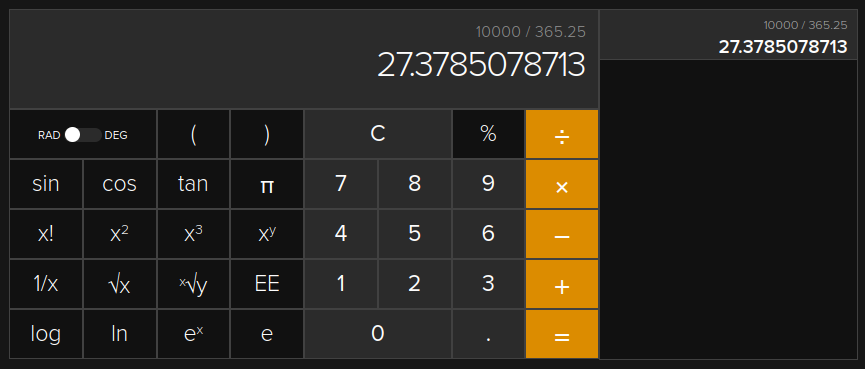

ユリウス日が2,460,000日を超えた日

以前に自分で書いててすっかり忘れていたのだが，昨日 2023-02-24T21:00:00+09:00 をもちまして，ユリウス日が2,460,000.0日を超えた。 単純に1年を365.25日（ユリウス年）と考えても1万日経過するのに27年ほどかかる。

via
DuckDuckGo
前の記事で書いたコードを少し変えて，コマンドライン引数から任意のユリウス日の値を現行暦に変換できるようにしてみた。
package main
import (
"flag"
"fmt"
"github.com/goark/koyomi/jdn"
"github.com/goark/koyomi/value"
)
func main() {
day := flag.Float64("d", 0, "Julian day")
flag.Parse()
dt := jdn.FromJD(*day)
fmt.Printf("Julian Day: %.3f\n", *day)
fmt.Printf("Gregorian: %v (%v)\n", dt, dt.In(value.JST))
}
これを使ってユリウス日 2,460,000.0 を計算してみる。
$ go run sample.go -d 2460000.0
Julian Day: 2460000.000
Gregorian: 2023-02-24 12:00:00 +0000 UTC (2023-02-24 21:00:00 +0900 JST)
よしよし。 ちゃんと動いてるな。
じゃあ，1万日前の 2,450,000.0 日はいつだったか調べてみよう。
$ go run sample.go -d 2450000.0
Julian Day: 2450000.000
Gregorian: 1995-10-09 12:00:00 +0000 UTC (1995-10-09 21:00:00 +0900 JST)
おー。 1995-10-09 かぁ。 次の1万日後はどうかな。
$ go run sample.go -d 2470000.0
Julian Day: 2470000.000
Gregorian: 2050-07-12 12:00:00 +0000 UTC (2050-07-12 21:00:00 +0900 JST)
ふむむ。 2050-07-12 か。 その頃は80代半ばだし，流石に生きちゃおらんだろう（笑）
というわけで，小ネタでした。
参考図書

- 天文年鑑 2023年版
- 天文年鑑編集委員会 (編集)
- 誠文堂新光社 2022-11-24 (Release 2022-11-24)
- 単行本
- 4416522940 (ASIN), 9784416522943 (EAN), 4416522940 (ISBN)
- 評価
天文ファン必携。2023年版。これが届くと年末って感じ。

- 天体の位置計算
- 長沢 工 (著)
- 地人書館 1985-09-01
- 単行本
- 4805202254 (ASIN), 9784805202258 (EAN), 4805202254 (ISBN)
- 評価
B1950.0 分点から J2000.0 分点への過渡期に書かれた本なので情報が古いものもあるが，基本的な内容は位置天文学の教科書として充分通用する。

- プログラミング言語Go (ADDISON-WESLEY PROFESSIONAL COMPUTING SERIES)
- Alan A.A. Donovan (著), Brian W. Kernighan (著), 柴田 芳樹 (翻訳)
- 丸善出版 2016-06-20
- 単行本（ソフトカバー）
- 4621300253 (ASIN), 9784621300251 (EAN), 4621300253 (ISBN)
- 評価
著者のひとりは（あの「バイブル」とも呼ばれる）通称 “K&R” の K のほうである。この本は Go 言語の教科書と言ってもいいだろう。と思ったら絶版状態らしい（2025-01 現在）。復刊を望む！